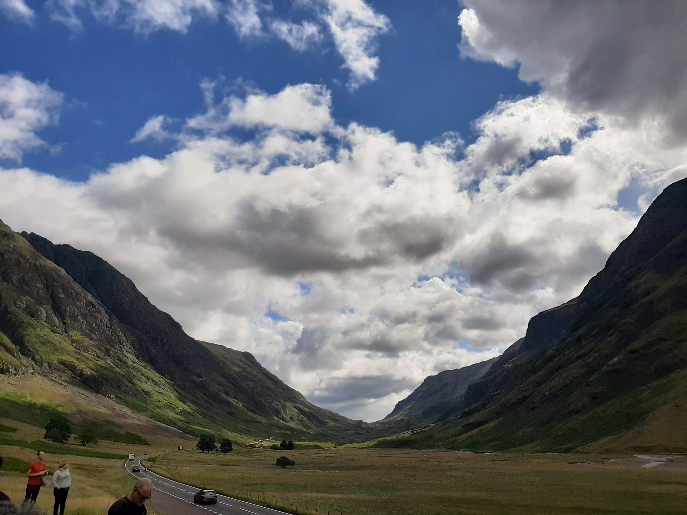

Escocia
Ruta
Lo primero es detallar la ruta que seguimos y aclarar algunas cosas. A ver, en Escocia hace frío (sí, hasta en verano) y llueve mucho, por lo que hay que ir bien preparado, así que presta atención, me lo agradecerás más tarde:
- Pantalón largo
- Zapato cómodo e impermeable
- CAPAS de ropa y una bufanda tipo manta
- Paraguas y chubasquero tipo anorak finito
- Mochila
Ahora sí, los detalles de la ruta:
Aterrizamos en Edimburgo, donde pasamos los primeros días de nuestra estancia visitando la ciudad, que detallaremos más adelante. Tras conocer a fondo la capital de Escocia hicimos diferentes excursiones de un día a otros puntos de la región (también tienes la opción de trasladarte a otro lugar de Escocia para visitar otras zonas, pero en nuestro caso nos quedamos en la ciudad).
La primera excursión fue por las tierras bajas de Escocia para visitar Loch Lomond y Stirling, además de los paisajes y pueblecitos que quedan en medio. Después hicimos una segunda excursión, esta vez por las tierras altas, los Highlands en la que pasamos por Glencoe, Fort William y llegamos hasta Fort Augustus, a orillas de Loch Ness entre otras pequeñas paradas. Finalmente hicimos la excursión de los castillos, para la cual bajamos al norte de Inglaterra a visitar Alnwick Castle y más tarde Bamburgh Castle. Terminamos el viaje con otra vuelta por los lugares que más nos gustaron de Edimburgo.
Edimburgo
Comienzamos el día temprano con una visita al Castillo de Edimburgo, donde dedicamos tiempo a explorar las diversas exposiciones y disfrutar de las vistas panorámicas. El Castillo de Edimburgo es una edificación cuyos primeros vestigios tienen 1000 años de antigüedad y está situado sobre la cima rocosa más alta de la zona, un antigüo volcán inactivo. Su situación estratégica permite ver todos los alrededores a kilómetros y solo tiene un lado accesible, ya que el resto son acantilados. Después desciendimos por la Royal Mile, la calle principal del casco antiguo, y exploramos sus tiendas, cafeterías y edificios históricos. en ella también se encuentra la "catedral" protestante de San Gil. Por la tarde, visitamos el Museo de Escritura de Edimburgo, que muestra la rica tradición literaria de la ciudad. Y finalmente disfrutamos de la animada vida nocturna del casco antiguo de Edimburgo y una visita a un pub tradicional escocés.
Continuamos la exploración de la ciudad con el bus turístico, que incluye comentarios sobre la historia y la cultura de Edimburgo mientras recorre la ciudad. Aprovechamos las paradas para visitar lugares como el Palacio de Holyroodhouse, el Museo de la Universidad de Edimburgo y el Museo Nacional de Escocia. Por la tarde, visitamos el Museo de la Guerra de Escocia, la Galería Nacional de Escocia y el Museo Real de Escocia. Terminamos el día explorando más del casco antiguo.
Dedicamos la mañana a explorar el Jardín Botánico Real de Edimburgo, un oasis de tranquilidad en la ciudad. Luego realizamos una caminata por Arthur's Seat para disfrutar de las vistas panorámicas y la belleza natural. Por la tarde, visitamos el Palacio de Holyroodhouse y sus hermosos jardines. Otro lugar interesante es el cementerio de Greyfriars, con su historia de fantasmas y otra sobre el amor perruno.
Huelga decir que este es un itinerario express y que las visitas que realizamos en realidad no fueron tan seguidas, dedicamos más tiempo a pasear y hacer tours andando por la ciudad.
Tierras bajas (Lowlands)
Una excursión de un día desde Edimburgo para visitar Loch Lomond y Stirling es una excelente manera de experimentar la belleza natural de Escocia y su rica historia. En nuestro caso fue un tour organizado en autocar con guía en inglés.
Llegamos a Stirling y comienza la visita por esta histórica ciudad. Stirling es conocida por su imponente castillo y su importancia en la historia de Escocia. Te recomiendo explorar el Castillo de Stirling, donde puedes aprender sobre las batallas clave de Escocia y disfrutar de vistas panorámicas desde lo alto de la colina.
Después de explorar Stirling seguimos hacia Balloch, que es una de las puertas de entrada al Parque Nacional de Loch Lomond y los Trossachs. Una vez en Balloch nos dirigimos al bonito Loch Lomond. Se puede dar un paseo por la orilla del lago, disfrutar de un crucero en barco o incluso hacer una caminata por los senderos cercanos si tienes tiempo y energía. Loch Lomond es famoso por su belleza natural y es un lugar perfecto para relajarse y disfrutar de la tranquilidad, también es el lago más grande de Escocia. En nuestro caso hicimos un paseo en barco, que es muy recomendable.
Tierras altas (Highlands)
Una excursión de un día desde Edimburgo para visitar Glencoe, Fort William y Fort Augustus es una excelente manera de explorar las impresionantes tierras altas de Escocia. Esta también fue organizada, en autocar y con guía en inglés. En Glencoe se puede disfrutar de un paseo por el valle de Glencoe y maravillarse con las impresionantes montañas que lo rodean. Si vas, asegúrate de visitar el Centro de Visitantes de Glencoe para aprender más sobre la historia de la región. Dato curioso: James Bond: Skyfall y la mayor parte de los paisajes de la saga de Harry Potter fueron grabados en este valle. Sin embargo, en Fort William no hay mucho que ver, como mucho está el Monumento a la Comandancia de Jacobo en el centro de la ciudad.
Fort Augustus es una pequeña localidad junto al lago y es un lugar encantador para explorar. Existe la posibilidad dar un paseo por el canal de Caledonia y observar las esclusas en funcionamiento. También puedes buscar el famoso monstruo del Lago Ness si tienes suerte, en nuestro caso solo vimos patos.
Castillos
De nuevo escogimos un tour guiado en autocar, esta vez con guía en español. Se trata de una visita al Castillo de Alnwick y otra al Castillo de Bamburgh, ambos visitables tanto por dentro como por fuera.
El Castillo de Alnwick es conocido por su arquitectura medieval y sus hermosos jardines. Para los fans: el Alnwick Castle es el lugar de grabación de las escenas exteriores de Hogwarts en Harry Potter (sobre todo en las primeras películas). El Castillo de Bamburgh es otro castillo impresionante ubicado en la costa del norte de Inglaterra. Vale la pena visitar el castillo y disfrutar de las vistas panorámicas del Mar del Norte desde lo alto de las murallas del castillo. Además, el la localidad de Bamburgh, que queda a los pies de la fortaleza, es preciosa. Por otro lado, Bamburgh Castle aparece en The last Kingdom, auqnue quizá sea más conocido como "Bebbanburg ".
Al pensar en Escocia a la mayoría de la gente le vienen a la mente prados verdes, lagos, castillos medievales y para los más frikis los espacios que vemos en Outlander y Harry Potter, como no. Escocia es, efectivamente, todo eso y mucho más. Un país lleno de folclore y tradición que vale la pena visitar.